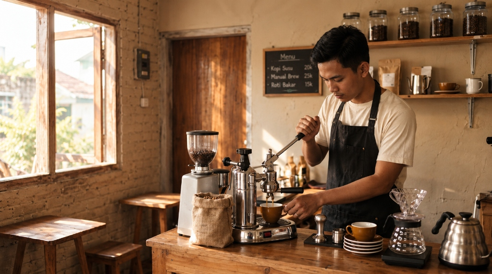
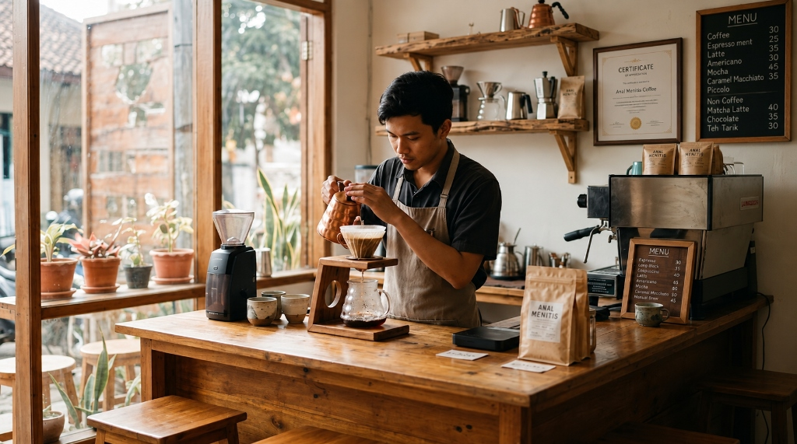
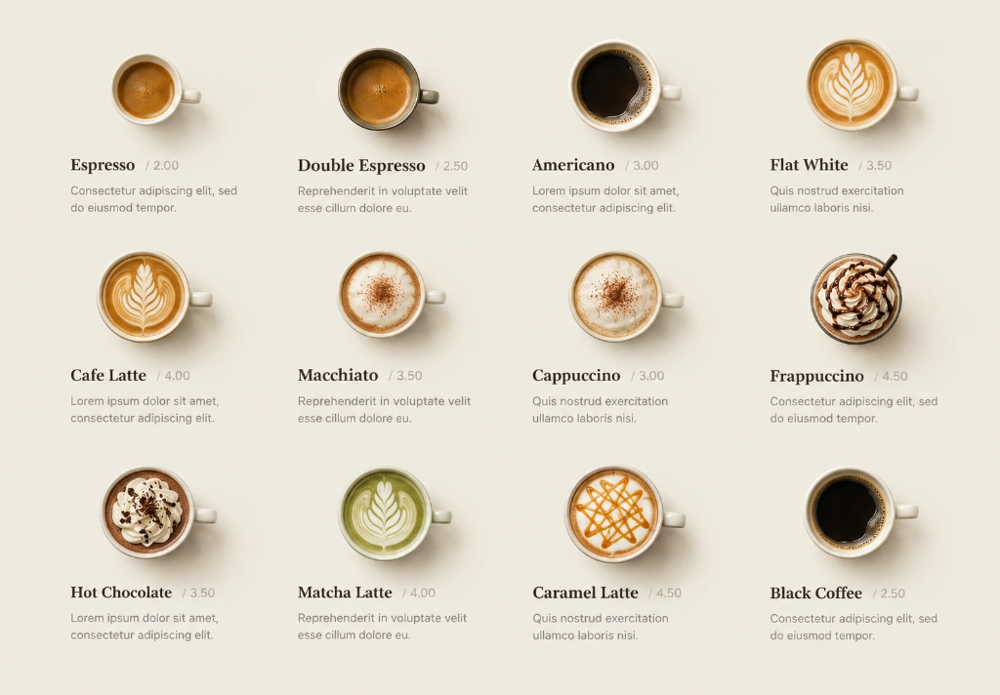

Peluang & Karir
Tumbuh & Berkarya Bersama Tim Kopi Senja
Kami mencari pribadi berdedikasi yang mencintai seduhan kopi artisanal, seni pelayanan hangat, dan budaya inovasi kuliner.
1

Awal Merintis
Memulai langkah pertama. Mempelajari fondasi kopi, kalibrasi espresso, dan standar pelayanan hangat khas Kopi Senja.
2
Mengasah Keahlian
Lulus sertifikasi internal bar. Menguasai latte art, manual brew, dan menjaga konsistensi kualitas di setiap cangkir.

3

Eksplorasi Rasa
Mempelajari food pairing dan standar penyajian pastry. Memastikan pengalaman kuliner yang paripurna.
4
Puncak Karir
Menjadi Store Manager atau Head Roaster. Merancang inovasi menu, mengelola operasional kedai, dan berkembang bersama kami.
Lowongan Pekerjaan
Job Title
Department
Location
Area Manager
Operation
Indonesia
Supervisor Store
Operation
Indonesia
Barista (Part-Time)
Operation
Indonesia